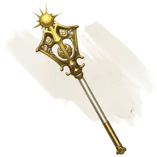

Булава распада
Mace of Disruption
Оружие (булава), редкое (требуется настройка)

Рекомендованная стоимость 501-5 000 зм
Если вы попадаете этим магическим оружием по Исчадию или Нежити, это существо получает дополнительные 2к6 урона излучением. Если у цели после получения этого урона 25 или меньше хитов, она должна преуспеть в спасброске Мудрости Сл 15, иначе будет уничтожена. При успешном спасброске существо становится испуганным вами до конца вашего следующего хода.
Пока вы держите это оружие, оно излучает яркий свет в радиусе 20 футов и тусклый свет в радиусе ещё 20 футов.